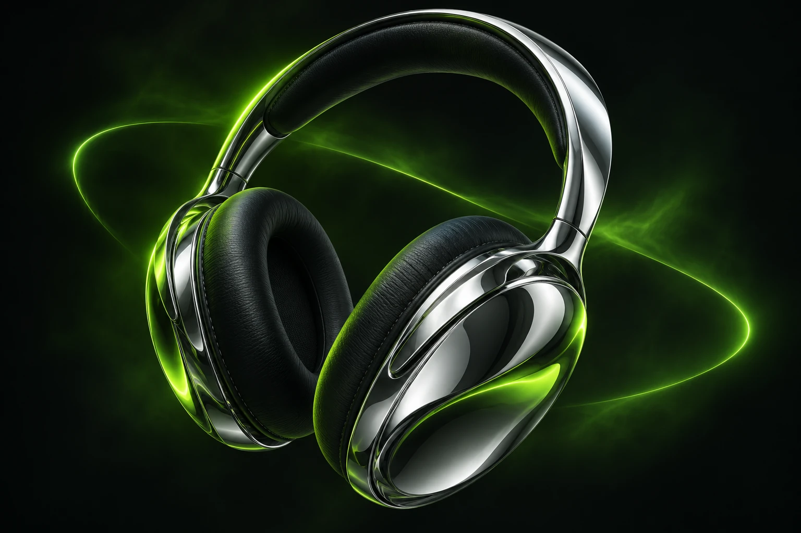

PULSE
.
发现音乐
/
特效已开启

让心跳
跟上
节拍
即刻开听
进入沉浸声场
♪
♫
♩
此刻，听点什么
.
探索全部
导入音乐
为你精选
电子浪潮
氛围漫游
Lo-fi 时刻
律动 House
留一点空间给好音乐
点击音乐旁的爱心，收藏你的心动频率。
发现更多音乐
你的指尖
也有
节拍
C
A
D
S
E
D
G
F
A
G
C
H
空间混响 ON
Neon Afterglow
PULSE ORIGINAL · 电子浪潮
0:00
2:24
PULSE
.
♪
Neon Afterglow
PULSE ORIGINAL · 电子浪潮